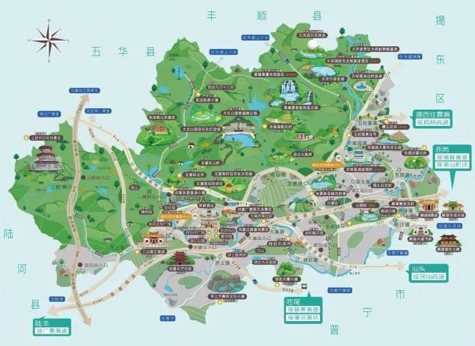
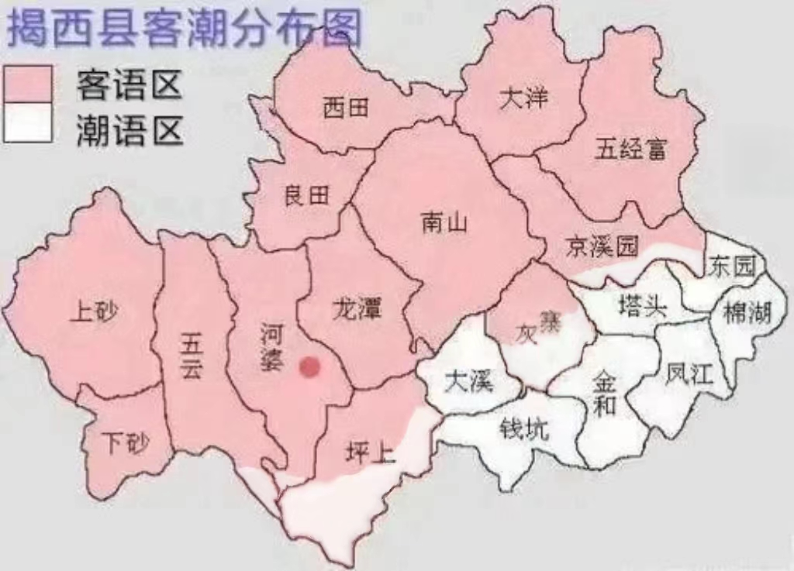

多姿多彩小县城
|  |  |
 |
 |
揭西揭西，和中国大部分美丽的县城有很多相同之处，但更别有一番特色，其丰富的生态资源、传统文化、革命基地，使它逐渐成为粤东地区一个新兴潜力县城。揭西境内方言有客家话、潮汕话，是全国著名的侨乡之一。揭西位于潮汕平原西北部，地处莲花山支脉大北山南麓，榕江南河中上游。东连揭东区，南邻普宁市，西南接陆河县，西北与五华县为邻，北与丰顺县接壤。 |
客家话代表街镇 河婆镇 县内操客家话的有上砂镇、五云镇、良田乡、坪上镇、河婆街道、龙潭镇、南山镇、灰寨镇、京溪园镇、五经富镇10个乡镇（街道）的居民，约占全县人口56%。客家人大多分布丘陵多山一带。 |
|
潮汕话代表街镇 棉湖镇 县内操潮汕话的有棉湖镇、钱坑镇、金和镇、凤江镇、大溪镇、塔头镇、东园镇7个乡镇的居民，约占全县人口44%。潮汕人大多分布在地势较平坦开阔的地带。在客家镇和潮汕镇交界地带部分居民两种方言都会讲。 |
|
 |
美食说的吃的，潮汕地区的人民最有发言权~民间的特色小吃---细粄、南山包粄、红桃粄、黄花梦粄、 栀粽、薯粉豆干、瓜丁、春卷、软饼、 薯粉粿、反沙芋头、芋泥、无米粿......每一样都让人垂涎三尺。对了，注意客家人说的“粄”和潮汕人说的“粿”，其实是同一样东西~ |
 |
美景揭西县位于广东大潮汕平原西部，境内有得天独厚的自然生态优势和旅游资源，是国家级生态示范区试点县。揭西县依托青山绿水优势，大做生态旅游文章，不遗余力开发和保护旅游资源，倾力发展旅游产业，社会效益与经济效益日益凸现。其中黄满寨瀑布旅游区，革命旧址火炬村，大溪镇井新古寨等都是热门旅游地点。 |